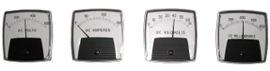

This condition suggests that there is a suspected failure in the primary current metering system. This condition is very unlikely to be related to the precipitator. It is more likely to be related to the performance of the electrical equipment. It is reasonable at this stage to assume that this indication is not severely affecting the performance of the Precipitator. It should none the less be of concern since a low current reading could allow the TR control to over-run the current limit of the system and allow more current to flow in the primary circuit than it is designed to handle. This could be catastrophic and could cause SCR, CLR and even TR failure. Other potential side effects are:
The primary current measured on the System may be displayed in two locations. You may have one or both of the following: